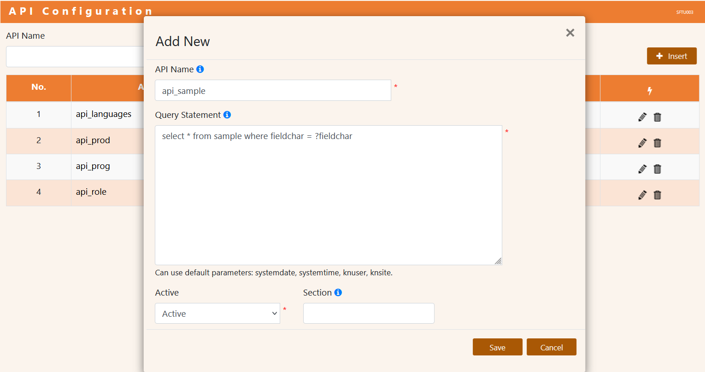

This is how to discover data from table in relational database.
In template all services file must have suffix name with .service.js and dynamic load from folders under project with the following.
Database configuration can setting to access by /config/default.json. see more detail will-sql. By default, template using tag DB_SECTION point to config. ex.
"DB_SECTION": "MYSQL",
"MYSQL" : { "alias": "mysql2", "dialect": "mysql", "url":"", "user": "root", "password": "U2FsdGVkX1/g09PLPXpBXTOvaP4gjCYAFWF/XOS711w=", "password_ENCRYPTED": "true", "host": "localhost", "port": 3306, "database": "assuredb", "options": { "charset": "utf8", "connectionLimit": 100 } },
Under folder operators this is where your xxx.service.ts file exist.
This is sample table schema and data.
CREATE TABLE sample (
fieldchar VARCHAR(50) NOT NULL,
fielddecimal DECIMAL(22,6) NULL DEFAULT NULL,
fielddate DATE NULL DEFAULT NULL,
fieldtime TIME NULL DEFAULT NULL,
fielddatetime DATETIME NULL DEFAULT NULL,
fieldinteger INT(10) NULL DEFAULT NULL,
fieldvarchar VARCHAR(15) NULL DEFAULT NULL,
fieldflag VARCHAR(1) NULL DEFAULT NULL,
fieldtext MEDIUMTEXT NULL DEFAULT NULL,
PRIMARY KEY (fieldchar)
)
INSERT INTO sample (fieldchar, fielddecimal, fielddate, fieldtime, fielddatetime, fieldinteger, fieldvarchar, fieldflag, fieldtext) VALUES
('AAA', 26900.000000, '2024-04-30', '12:00:00', '2024-04-30 12:00:00', 8900, 'E', '0', 'Denzel Washington'),
('AXT', 1300.000000, '2024-11-01', '10:00:00', '2024-11-01 10:00:00', 1300, 'Q', '1', 'Dustin Hoffman'),
('AYB', 1200.000000, '2024-11-01', '10:00:00', '2024-11-01 10:00:00', 1200, 'Q', '1', 'Gene Hackman'),
('JCB', 2300.000000, '2024-11-01', '10:00:00', '2024-11-01 10:00:00', 200, 'Q', '1', 'Paul Newman'),
('JOI', 12200.000000, '2024-11-01', '10:00:00', '2024-11-01 10:00:00', 100, 'Q', '1', 'Tom Hanks'),
('MAK', 98500.958500, '2024-01-05', '15:09:09', '2024-01-05 15:09:09', 8000, 'E', '1', 'Leonardo Dicaprio'),
('TME', 45600.250000, '2024-10-16', '14:00:00', '2024-10-16 14:00:00', 8900, 'E', '0', 'Meryl Streep');
create simple service
sample.service.ts.
import KnService from "@willsofts/will-db";
import { ServiceSchema } from "moleculer";
import { DB_SECTION } from "../utils/EnvironmentVariable";
const SampleService : ServiceSchema = {
name: "sample", //specify api name
mixins: [KnService], //required base service template
model: {
name: "sample", //specify table name
alias: { privateAlias: DB_SECTION }, //specify db section
},
settings: {
//do not return column schema
disableColumnSchema: true,
//do not paging, if not defined it will make offset query
disableQueryPaging: true,
//do not return offsets
disablePageOffset: true,
},
}
export = SampleService;
After build and run, you can invoke.
curl -X POST http://localhost:8080/api/sample/list
curl -X POST http://localhost:8080/api/sample/list?fieldchar=AAA
create model service
sample.model.service.ts
import KnService from "@willsofts/will-db";
import { ServiceSchema } from "moleculer";
import { DB_SECTION } from "../utils/EnvironmentVariable";
const SampleModelService : ServiceSchema = {
name: "sample.model",
mixins: [KnService],
model: {
name: "sample",
alias: { privateAlias: DB_SECTION },
fields: {
//this field make as key field
fieldchar: { type: "STRING", key: true },
fielddecimal: { type: "DECIMAL" },
//this field does not update
fielddate: { type: "DATE", updated: false },
fieldtime: { type: "TIME", updated: false },
//this field does not in select clause
fielddatetime: { type: "DATETIME", selected: false },
fieldinteger: { type: "INTEGER" },
fieldvarchar: { type: "STRING", defaultValue: "E" },
fieldflag: { type: "STRING", defaultValue: "0" },
fieldtext: { type: "STRING" },
//this field does not exist in table, it is user defined field
remarks: { type: "STRING", calculated: true },
},
//prefix field name with table name ex. sample.fieldchar,sample.fieldtext
prefixNaming: true
},
settings: {
disableColumnSchema: true,
},
}
export = SampleModelService;
After build and run, you can invoke.
curl -X POST http://localhost:8080/api/sample.model/list
curl -X POST http://localhost:8080/api/sample.model/list?fieldchar=AAA
create dynamic query service, user defined action.
sample.query.service.ts
import KnService from "@willsofts/will-db";
import { KnSQL } from "@willsofts/will-sql";
import { ServiceSchema } from "moleculer";
import { DB_SECTION } from "../utils/EnvironmentVariable";
const SampleQueryService : ServiceSchema = {
name: "sample.query",
mixins: [KnService],
model: {
name: "sample",
alias: { privateAlias: DB_SECTION },
},
actions: {
async query(ctx: any) {
let sql = new KnSQL("select * from sample ");
//check if defined parameter for specified criteria
if(ctx.params.fieldchar) {
sql.append("where fieldchar LIKE ?fieldchar ");
sql.set("fieldchar","%"+ctx.params.fieldchar+"%");
}
let rs = await this.handler.executeQuery(sql);
return rs.rows;
},
}
}
export = SampleQueryService;
After build and run, you can invoke.
curl -X POST http://localhost:8080/api/sample.query/query
curl -X POST http://localhost:8080/api/sample.query/query?fieldchar=AAA
create handler service, user defined handler class.
SampleHandler.ts
import { KnModel } from "@willsofts/will-db";
import { KnSQLInterface } from "@willsofts/will-sql";
import { KnContextInfo } from '@willsofts/will-core';
import { TknOperateHandler } from '@willsofts/will-serv';
export class SampleHandler extends TknOperateHandler {
public progid = "sample";
public model : KnModel = {
name: "sample",
alias: { privateAlias: this.section },
fields: {
fieldchar: { type: "STRING", key: true },
fielddecimal: { type: "DECIMAL" },
fielddate: { type: "DATE", updated: false },
fieldtime: { type: "TIME", updated: false },
fielddatetime: { type: "DATETIME", created: true },
fieldinteger: { type: "INTEGER" },
fieldvarchar: { type: "STRING", defaultValue: "E" },
fieldflag: { type: "STRING", defaultValue: "0" },
fieldtext: { type: "STRING" },
},
prefixNaming: true
};
protected override buildFilterQuery(context: KnContextInfo, model: KnModel, knsql: KnSQLInterface, selector: string, action?: string, subaction?: string): KnSQLInterface {
if(this.isCollectMode(action)) {
let params = context.params;
knsql.append(selector);
knsql.append(" from ");
knsql.append(model.name);
let filter = " where ";
if(params.fieldchar) {
knsql.append(filter).append("fieldchar LIKE ?fieldchar");
knsql.set("fieldchar","%"+params.fieldchar+"%");
filter = " and ";
}
return knsql;
}
return super.buildFilterQuery(context, model, knsql, selector, action, subaction);
}
}
sample.handler.service.ts
import KnService from "@willsofts/will-db";
import { ServiceSchema } from "moleculer";
import { SampleHandler } from "./SampleHandler";
const SampleHandlerService : ServiceSchema = {
name: "sample.handler",
mixins: [KnService],
handler: new SampleHandler(),
}
export = SampleHandlerService;
After build and run, you can invoke.
curl -X POST http://localhost:8080/api/sample.handler/list
curl -X POST http://localhost:8080/api/sample.handler/list?fieldchar=AAA
create action handler service, user defined action handler class.
SampleQueryHandler.ts
import { KnModel, KnOperation } from "@willsofts/will-db";
import { KnSQL, KnRecordSet } from "@willsofts/will-sql";
import { KnContextInfo } from '@willsofts/will-core';
import { TknOperateHandler, OPERATE_HANDLERS } from '@willsofts/will-serv';
export class SampleQueryHandler extends TknOperateHandler {
public progid = "sample";
public model : KnModel = {
name: "sample",
alias: { privateAlias: this.section },
};
public handlers = OPERATE_HANDLERS.concat([{name: "query"}]);
public async query(context: KnContextInfo) : Promise<any> {
return this.callFunctional(context, {operate: KnOperation.QUERY, raw: false}, this.doQuery);
}
protected async doQuery(context: KnContextInfo, model: KnModel) : Promise<KnRecordSet> {
let db = this.getPrivateConnector(model);
try {
let knsql = new KnSQL();
knsql.append("select * from ");
knsql.append(model.name);
let filter = " where ";
if(context.params.fieldchar) {
knsql.append(filter).append("fieldchar LIKE ?fieldchar");
knsql.set("fieldchar","%"+context.params.fieldchar+"%");
filter = " and ";
}
let rs = await knsql.executeQuery(db,context);
return this.createRecordSet(rs);
} catch(ex: any) {
this.logger.error(this.constructor.name,ex);
return Promise.reject(this.getDBError(ex));
} finally {
if(db) db.close();
}
}
}
sample.action.service.ts
import KnService from "@willsofts/will-db";
import { ServiceSchema } from "moleculer";
import { SampleQueryHandler } from "./SampleQueryHandler";
const SampleQueryHandlerService : ServiceSchema = {
name: "sample.action",
mixins: [KnService],
handler: new SampleQueryHandler(),
}
export = SampleQueryHandlerService;
After build and run, you can invoke.
curl -X POST http://localhost:8080/api/sample.action/list
curl -X POST http://localhost:8080/api/sample.action/list?fieldchar=AAA
In template you can setting and invoked by configure.
Data table service by datatable that support list, get and category actions to discover. This is dynamic fetching data set from specified table schema. In order to use api with get and category this reserved for table schema with caption field/column nameen and nameth.
Predefined data categories service by category that support groups and lists actions to discover. This need config/setting.json configuration settings.
config/setting.json
"sample" : {"tableName": "sample", "keyField": "fieldchar", "addonFields": "fieldvarchar,fieldflag", "orderFields": "fieldchar", "captionFields": "fieldtext", "nameen": "fieldtext", "nameth": "fieldtext", "setting": { "keyName": "fieldchar", "valueNames": ["fieldtext"]} },
Data service by dataservice that support lookup and lists actions to discover. This is dynamic fetching data set from custom setting via table api_config.
Setting data service by API Configuration screen.
